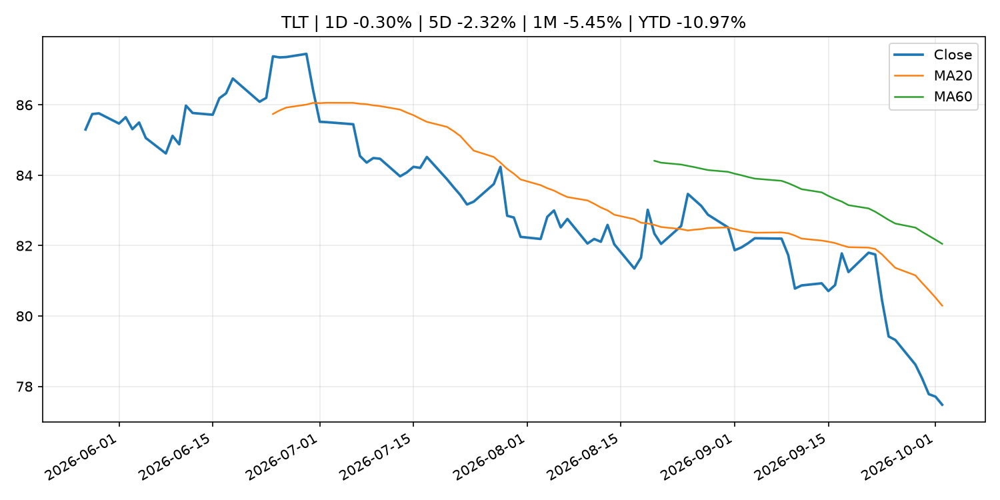
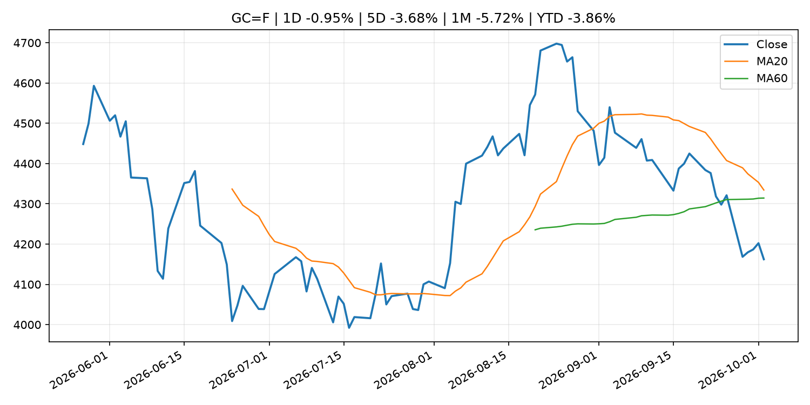
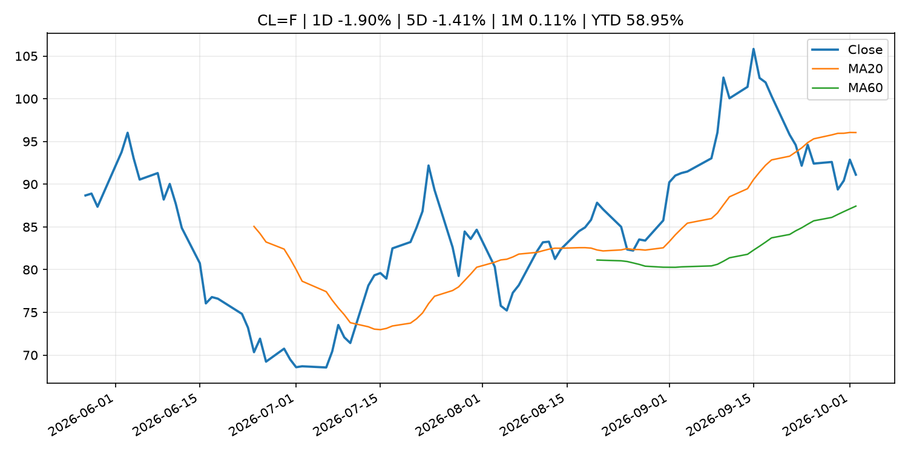
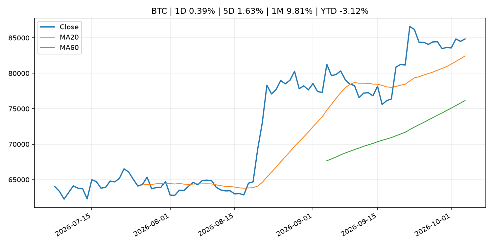
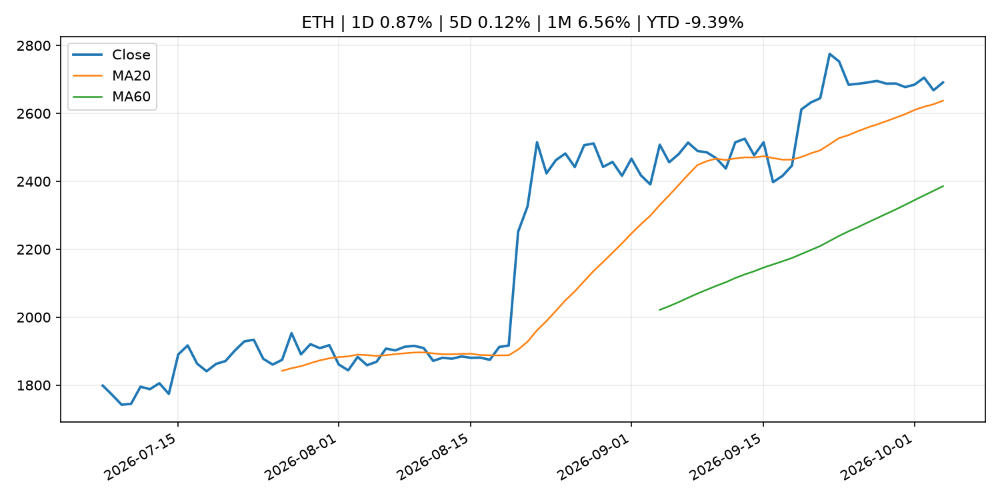
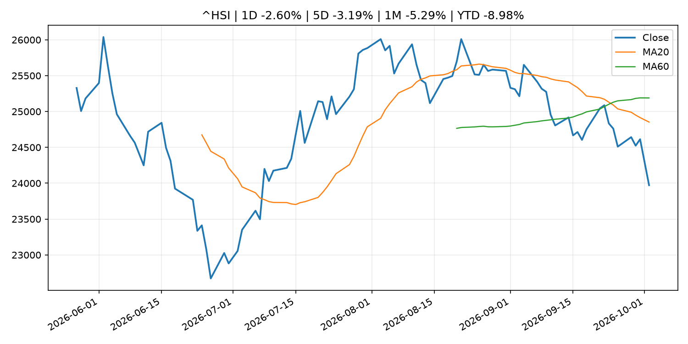

Global Macro Morning Briefing - 2026-10-04
Not financial advice / 非投资建议。
0. 今日总览
- 市场状态：risk_on。股指上涨、波动率或美元回落，市场更接近风险偏好改善。
- 今日三大主线：
- central_bank_decision: Traders now see little chance of a Fed rate hike in October after weak jobs report
- macro_data: U.S. added just 29,000 jobs in September, with unemployment rate rising to 4.2%
- regulation: Trump’s potential AI czar, Jay Clayton, helped pioneer the SEC’s crypto crackdown
- 一句话结论：今日晨报重点关注：央行决策会重定价利率、汇率、久期资产和风险资产。；这类宏观数据会直接改变市场对通胀、增长和政策路径的预期。。跨资产方面，SPY 1D 0.74%；QQQ 1D 1.02%；^VIX 1D -6.59%；TLT 1D -0.30%；GC=F 1D -0.95%；CL=F 1D -1.90%；BTC 1D 0.39%；ETH 1D 0.87%；股指上涨、波动率或美元回落，市场更接近风险偏好改善。政策、通胀、利率、美元、美债、能源和加密监管仍是主要观察线索。所有结论仅基于公开数据与短摘要整理，不构成投资建议。
1. 隔夜跨资产市场
- 美股：SPY 1D 0.74%，QQQ 1D 1.02%，整体趋势需结合 VIX 和利率确认。
- 美债/美元：TLT 1D -0.30%，美元指数 1D -0.17%，是判断折现率压力的核心线索。
- 黄金/原油：黄金 1D -0.95%，原油 1D -1.90%，用于观察避险、通胀和地缘风险。
- 加密：BTC 1D 0.39%，ETH 1D 0.87%，关注是否独立于纳指走出加密自身行情。
- 港股/A股：恒生 1D -2.60%，沪深300/上证 1D n/a，重点看中国政策预期与人民币线索。
- 风险观察：确认风险偏好是否扩散到小盘股、信用利差和周期品。
US_EQUITY
| symbol | latest close | 1D | 5D | 1M | YTD | trend |
|---|---|---|---|---|---|---|
| SPY | 769.64 | 0.74% | -0.22% | 0.59% | 12.66% | uptrend |
| QQQ | 749.58 | 1.02% | 0.68% | 5.69% | 22.26% | strong_uptrend |
| DIA | 511.10 | 0.49% | -1.23% | -3.68% | 5.68% | strong_downtrend |
| IWM | 281.52 | 0.90% | -0.16% | -4.25% | 13.16% | strong_downtrend |
| VTI | 377.99 | 0.75% | -0.47% | 0.29% | 12.39% | uptrend |
US_MACRO_MARKET
| symbol | latest close | 1D | 5D | 1M | YTD | trend |
|---|---|---|---|---|---|---|
| ^VIX | 15.31 | -6.59% | 2.96% | 6.91% | 5.51% | downtrend |
| DX-Y.NYB | 101.93 | -0.17% | 0.95% | 2.38% | 3.57% | uptrend |
| TLT | 77.48 | -0.30% | -2.32% | -5.45% | -10.97% | strong_downtrend |
| IEF | 89.05 | -0.28% | -1.06% | -3.40% | -7.32% | strong_downtrend |
COMMODITIES
| symbol | latest close | 1D | 5D | 1M | YTD | trend |
|---|---|---|---|---|---|---|
| GC=F | 4,162.30 | -0.95% | -3.68% | -5.72% | -3.86% | range_bound |
| SI=F | 59.98 | -1.23% | -6.64% | -7.33% | -14.99% | range_bound |
| CL=F | 91.11 | -1.90% | -1.41% | 0.11% | 58.95% | range_bound |
| BZ=F | 102.25 | -0.06% | -1.98% | 6.92% | 68.31% | range_bound |
| NG=F | 3.04 | 2.29% | -5.04% | 2.67% | -16.11% | uptrend |
| HG=F | 6.49 | 0.15% | -3.04% | -0.14% | 15.11% | range_bound |
HK_MARKET
| symbol | latest close | 1D | 5D | 1M | YTD | trend |
|---|---|---|---|---|---|---|
| ^HSI | 23,972.29 | -2.60% | -3.19% | -5.29% | -8.98% | strong_downtrend |
| 0700.HK | 421.20 | -2.27% | -3.92% | -3.88% | -32.39% | downtrend |
| 9988.HK | 104.40 | -2.06% | -5.09% | -5.00% | -29.93% | strong_downtrend |
| 3690.HK | 70.20 | -2.09% | -2.84% | -10.86% | -32.89% | strong_downtrend |
| 1810.HK | 24.24 | -3.96% | -8.80% | -13.61% | -39.82% | strong_downtrend |
| 1211.HK | 73.90 | -2.25% | -7.04% | -13.31% | -25.16% | strong_downtrend |
CRYPTO
| symbol | latest close | 1D | 5D | 1M | YTD | trend |
|---|---|---|---|---|---|---|
| BTC | 84,839.42 | 0.39% | 1.63% | 9.81% | -3.12% | strong_uptrend |
| ETH | 2,691.03 | 0.87% | 0.12% | 6.56% | -9.39% | strong_uptrend |
| SOLANA | 119.88 | 1.09% | 0.89% | 17.81% | -3.73% | strong_uptrend |
| BINANCECOIN | 786.54 | 2.41% | 2.99% | 8.13% | -8.83% | strong_uptrend |
| RIPPLE | 1.49 | 0.27% | -0.49% | 8.95% | -19.12% | strong_uptrend |
2. 今日最重要的 10 条新闻
1. Traders now see little chance of a Fed rate hike in October after weak jobs report
- 来源：CNBC Economy
- 时间：2026-10-02T13:29:27+00:00
- 地区：US
- 事件类型：central_bank_decision
- 重要性层级：Tier 1
- 一句话摘要：Odds tumbled after a jobs report showed a soft labor market, leading more traders to lower the the chances of a fed funds rate increase this month.
- 为什么重要：央行决策会重定价利率、汇率、久期资产和风险资产。
- 可能影响：主要影响 QQQ，方向为 negative，强度 high；鹰派政策提高折现率，压制成长股估值。
- 资产：QQQ 方向：negative 强度：high 原因：鹰派政策提高折现率，压制成长股估值。
- 资产：SPY 方向：negative 强度：medium 原因：更紧政策通常削弱风险偏好。
- 资产：TLT 方向：negative 强度：high 原因：利率上行通常压低长债价格。
- 资产：DXY 方向：positive 强度：high 原因：更高利率预期通常支撑美元。
- 资产：BTC 方向：negative 强度：high 原因：流动性收紧通常压制高 beta 加密资产。
- 原文链接：https://www.cnbc.com/2026/10/02/fed-rate-hike-odds-decline-after-september-jobs-report.html
2. U.S. added just 29,000 jobs in September, with unemployment rate rising to 4.2%
- 来源：CoinDesk
- 时间：2026-10-02T12:31:53+00:00
- 地区：global
- 事件类型：macro_data
- 重要性层级：Tier 1
- 一句话摘要：U.S. added just 29,000 jobs in September, with unemployment rate rising to 4.2%
- 为什么重要：这类宏观数据会直接改变市场对通胀、增长和政策路径的预期。
- 可能影响：可能影响利率、汇率、风险资产或大宗商品预期，但当前公开信息不足以判断明确方向。
- 资产：暂无明确资产映射
- 方向：unknown
- 强度：low
- 原因：公开信息不足以判断方向。
- 原文链接：https://www.coindesk.com/markets/2026/10/02/u-s-added-just-29-000-jobs-in-september-with-unemployment-rate-rising-to-4-2
3. Trump’s potential AI czar, Jay Clayton, helped pioneer the SEC’s crypto crackdown
- 来源：CoinDesk
- 时间：2026-10-02T17:12:48+00:00
- 地区：global
- 事件类型：regulation
- 重要性层级：Tier 2
- 一句话摘要：Trump’s potential AI czar, Jay Clayton, helped pioneer the SEC’s crypto crackdown
- 为什么重要：监管变化会改变行业盈利预期和资产风险溢价。
- 可能影响：主要影响 BTC，方向为 mixed，强度 high；加密监管或 ETF 进展会改变 BTC 的资金流和风险溢价。
- 资产：BTC 方向：mixed 强度：high 原因：加密监管或 ETF 进展会改变 BTC 的资金流和风险溢价。
- 资产：ETH 方向：mixed 强度：high 原因：监管框架会影响 ETH 产品化和机构参与度。
- 资产：COIN 方向：mixed 强度：medium 原因：监管清晰度和执法风险会影响交易平台估值。
- 资产：crypto market 方向：mixed 强度：high 原因：信息影响整个加密市场结构，但方向取决于细节。
- 原文链接：https://www.coindesk.com/news-analysis/2026/10/02/possible-next-crypto-czar-jay-clayton-began-crypto-s-regulation-by-enforcement-at-sec
4. Federal Reserve Board announces it will extend, until November 4, the comment period on its proposal to modernize Regulation O
- 来源：Federal Reserve Press Releases
- 时间：2026-10-02T20:00:00+00:00
- 地区：US
- 事件类型：regulation
- 重要性层级：Tier 2
- 一句话摘要：Federal Reserve Board announces it will extend, until November 4, the comment period on its proposal to modernize Regulation O
- 为什么重要：监管变化会改变行业盈利预期和资产风险溢价。
- 可能影响：可能影响利率、汇率、风险资产或大宗商品预期，但当前公开信息不足以判断明确方向。
- 资产：暂无明确资产映射
- 方向：unknown
- 强度：low
- 原因：公开信息不足以判断方向。
- 原文链接：https://www.federalreserve.gov/newsevents/pressreleases/bcreg20261002a.htm
5. Federal Reserve Board issues enforcement action with Ontario Bancorporation, Inc.
- 来源：Federal Reserve Press Releases
- 时间：2026-10-02T15:00:00+00:00
- 地区：US
- 事件类型：regulation
- 重要性层级：Tier 2
- 一句话摘要：Federal Reserve Board issues enforcement action with Ontario Bancorporation, Inc.
- 为什么重要：监管变化会改变行业盈利预期和资产风险溢价。
- 可能影响：可能影响利率、汇率、风险资产或大宗商品预期，但当前公开信息不足以判断明确方向。
- 资产：暂无明确资产映射
- 方向：unknown
- 强度：low
- 原因：公开信息不足以判断方向。
- 原文链接：https://www.federalreserve.gov/newsevents/pressreleases/enforcement20261002a.htm
6. Falling wages, soaring energy prices and inflation: It’s beginning to look a lot like the 1970s
- 来源：MarketWatch Top Stories
- 时间：2026-10-03T23:58:00+00:00
- 地区：US
- 事件类型：other
- 重要性层级：Tier 3
- 一句话摘要：Is it time to dust off the financial playbook from that dismal decade?
- 为什么重要：这条信息暂未匹配到重大宏观、政策或市场事件，更适合作为背景跟踪。
- 可能影响：主要影响 DXY，方向为 positive，强度 high；通胀压力可能推高政策利率预期并支撑美元。
- 资产：DXY 方向：positive 强度：high 原因：通胀压力可能推高政策利率预期并支撑美元。
- 资产：TLT 方向：negative 强度：high 原因：通胀上行通常推升收益率、压低长债价格。
- 资产：QQQ 方向：negative 强度：high 原因：更高利率对成长股估值折现率不利。
- 资产：SPY 方向：mixed 强度：medium 原因：名义增长可能支撑收入，但更高利率压制估值。
- 资产：GC=F 方向：mixed 强度：medium 原因：通胀对黄金是支撑，但实际利率上行会形成压力。
- 资产：BTC 方向：mixed 强度：medium 原因：抗通胀叙事和流动性收紧可能相互抵消。
- 原文链接：https://www.marketwatch.com/story/falling-wages-soaring-energy-prices-and-inflation-its-beginning-to-look-a-lot-like-the-1970s-d645cbca?mod=mw_rss_topstories
7. Switching jobs to get higher pay works best in these industries
- 来源：MarketWatch Top Stories
- 时间：2026-10-03T16:42:00+00:00
- 地区：US
- 事件类型：other
- 重要性层级：Tier 3
- 一句话摘要：Finding a new job is one way to get a pay increase at a time when inflation has been outpacing wage growth.
- 为什么重要：这条信息暂未匹配到重大宏观、政策或市场事件，更适合作为背景跟踪。
- 可能影响：主要影响 DXY，方向为 positive，强度 high；通胀压力可能推高政策利率预期并支撑美元。
- 资产：DXY 方向：positive 强度：high 原因：通胀压力可能推高政策利率预期并支撑美元。
- 资产：TLT 方向：negative 强度：high 原因：通胀上行通常推升收益率、压低长债价格。
- 资产：QQQ 方向：negative 强度：high 原因：更高利率对成长股估值折现率不利。
- 资产：SPY 方向：mixed 强度：medium 原因：名义增长可能支撑收入，但更高利率压制估值。
- 资产：GC=F 方向：mixed 强度：medium 原因：通胀对黄金是支撑，但实际利率上行会形成压力。
- 资产：BTC 方向：mixed 强度：medium 原因：抗通胀叙事和流动性收紧可能相互抵消。
- 原文链接：https://www.marketwatch.com/story/the-best-industry-to-change-jobs-to-get-paid-more-money-and-the-worst-ae33a3a7?mod=mw_rss_topstories
3. 政策与央行观察
1. Traders now see little chance of a Fed rate hike in October after weak jobs report
- 来源：CNBC Economy
- 时间：2026-10-02T13:29:27+00:00
- 地区：US
- 事件类型：central_bank_decision
- 重要性层级：Tier 1
- 一句话摘要：Odds tumbled after a jobs report showed a soft labor market, leading more traders to lower the the chances of a fed funds rate increase this month.
- 为什么重要：央行决策会重定价利率、汇率、久期资产和风险资产。
- 可能影响：主要影响 QQQ，方向为 negative，强度 high；鹰派政策提高折现率，压制成长股估值。
- 资产：QQQ 方向：negative 强度：high 原因：鹰派政策提高折现率，压制成长股估值。
- 资产：SPY 方向：negative 强度：medium 原因：更紧政策通常削弱风险偏好。
- 资产：TLT 方向：negative 强度：high 原因：利率上行通常压低长债价格。
- 资产：DXY 方向：positive 强度：high 原因：更高利率预期通常支撑美元。
- 资产：BTC 方向：negative 强度：high 原因：流动性收紧通常压制高 beta 加密资产。
- 原文链接：https://www.cnbc.com/2026/10/02/fed-rate-hike-odds-decline-after-september-jobs-report.html
2. Trump’s potential AI czar, Jay Clayton, helped pioneer the SEC’s crypto crackdown
- 来源：CoinDesk
- 时间：2026-10-02T17:12:48+00:00
- 地区：global
- 事件类型：regulation
- 重要性层级：Tier 2
- 一句话摘要：Trump’s potential AI czar, Jay Clayton, helped pioneer the SEC’s crypto crackdown
- 为什么重要：监管变化会改变行业盈利预期和资产风险溢价。
- 可能影响：主要影响 BTC，方向为 mixed，强度 high；加密监管或 ETF 进展会改变 BTC 的资金流和风险溢价。
- 资产：BTC 方向：mixed 强度：high 原因：加密监管或 ETF 进展会改变 BTC 的资金流和风险溢价。
- 资产：ETH 方向：mixed 强度：high 原因：监管框架会影响 ETH 产品化和机构参与度。
- 资产：COIN 方向：mixed 强度：medium 原因：监管清晰度和执法风险会影响交易平台估值。
- 资产：crypto market 方向：mixed 强度：high 原因：信息影响整个加密市场结构，但方向取决于细节。
- 原文链接：https://www.coindesk.com/news-analysis/2026/10/02/possible-next-crypto-czar-jay-clayton-began-crypto-s-regulation-by-enforcement-at-sec
3. Federal Reserve Board announces it will extend, until November 4, the comment period on its proposal to modernize Regulation O
- 来源：Federal Reserve Press Releases
- 时间：2026-10-02T20:00:00+00:00
- 地区：US
- 事件类型：regulation
- 重要性层级：Tier 2
- 一句话摘要：Federal Reserve Board announces it will extend, until November 4, the comment period on its proposal to modernize Regulation O
- 为什么重要：监管变化会改变行业盈利预期和资产风险溢价。
- 可能影响：可能影响利率、汇率、风险资产或大宗商品预期，但当前公开信息不足以判断明确方向。
- 资产：暂无明确资产映射
- 方向：unknown
- 强度：low
- 原因：公开信息不足以判断方向。
- 原文链接：https://www.federalreserve.gov/newsevents/pressreleases/bcreg20261002a.htm
4. Federal Reserve Board issues enforcement action with Ontario Bancorporation, Inc.
- 来源：Federal Reserve Press Releases
- 时间：2026-10-02T15:00:00+00:00
- 地区：US
- 事件类型：regulation
- 重要性层级：Tier 2
- 一句话摘要：Federal Reserve Board issues enforcement action with Ontario Bancorporation, Inc.
- 为什么重要：监管变化会改变行业盈利预期和资产风险溢价。
- 可能影响：可能影响利率、汇率、风险资产或大宗商品预期，但当前公开信息不足以判断明确方向。
- 资产：暂无明确资产映射
- 方向：unknown
- 强度：low
- 原因：公开信息不足以判断方向。
- 原文链接：https://www.federalreserve.gov/newsevents/pressreleases/enforcement20261002a.htm
4. 市场异动与图表
- SPY 上涨 0.74%
- QQQ 上涨 1.02%
- VIX 下跌 -6.59%
- Gold 下跌 -0.95%
- Oil 下跌 -1.90%
SPY

QQQ

^VIX

TLT

GC=F

CL=F

BTC

ETH

^HSI

5. 华尔街与机构公开观点
- 暂无可靠公开观点。
6. 今日重点关注
- 经济数据：经济数据：暂无可靠公开日历数据；如配置经济日历源后可自动填充。
- 央行讲话：央行讲话：暂无可靠公开日历数据；重点跟踪 Fed、ECB、BoJ、PBOC 官网 RSS。
- 财报：财报：暂无可靠数据。
- 政策事件：政策事件：暂无可靠数据。
- 风险提醒：风险提醒：关注数据源失败项、突发地缘风险、利率和美元的二阶反应。
7. 英文金融表达与宏观概念
- inflation expectations：通胀预期，指家庭、企业或市场对未来通胀的预估。 例句：Inflation expectations can shape wage bargaining and bond yields.
- real yield：实际收益率，名义利率扣除通胀预期后的收益率。 例句：Gold often reacts more to real yields than nominal yields.
- terminal rate：终端利率，市场预期本轮加息周期的最高政策利率。 例句：A higher terminal rate can pressure growth stocks.
- soft landing：软着陆，指通胀回落而经济避免明显衰退。 例句：Markets often rally when data support a soft landing.
- market structure：市场结构，指交易、托管、清算、ETF、监管等制度安排。 例句：Crypto market structure rules can affect institutional participation.
- risk-off：避险模式，资金偏向美元、国债、黄金等防御资产。 例句：A geopolitical shock can push markets into risk-off mode.
8. 背景材料
- The government can take 15% of Social Security benefits to repay student loans. These proposals seek to stop it.（MarketWatch Top Stories，other）：Debt among older Americans is rising, both in terms of the number of older households carrying debt and the amount borrowed.
- Falling wages, soaring energy prices and inflation: It’s beginning to look a lot like the 1970s（MarketWatch Top Stories，other）：Is it time to dust off the financial playbook from that dismal decade?
- ‘I don’t want to die on the sales floor’: I’m 67 and earn $19.50 an hour at a big-box store. When can I finally retire?（MarketWatch Top Stories，other）：“I started taking Social Security at 66 and receive $2,410 a month. I have $214,000 in my 401(k).”
- These bond strategies can help you get a safe 5% return on your cash（MarketWatch Top Stories，other）：With U.S. Treasury yields on the rise, financial planners say they’re seeing a growing interest in bonds, especially among investors looking to secure fixed income in retirement.
- Switching jobs to get higher pay works best in these industries（MarketWatch Top Stories，other）：Finding a new job is one way to get a pay increase at a time when inflation has been outpacing wage growth.
- Federal Reserve Board announces approval of application by Fleur Capital Corporation（Federal Reserve Press Releases，other）：Federal Reserve Board announces approval of application by Fleur Capital Corporation
- Decisions taken by the Governing Council of the ECB (in addition to decisions setting interest rates)（ECB Press Releases，other）：Decisions taken by the Governing Council of the ECB (in addition to decisions setting interest rates)
- Boris Vujčić: Resilience, integration and competitiveness: building the future of European banking（ECB Press Releases，other）：Boris Vujčić: Resilience, integration and competitiveness: building the future of European banking
- Live updates: Bitcoin reverses big early gains following soft U.S. jobs data（CoinDesk，other）：Live updates: Bitcoin reverses big early gains following soft U.S. jobs data
- Crypto traders are in risk-on mode as bitcoin dominance nears return to 60%（CoinDesk，other）：Crypto traders are in risk-on mode as bitcoin dominance nears return to 60%
- Bitcoin open interest jumps $2.3 billion as traders pay more for bullish positions（CoinDesk，other）：Bitcoin open interest jumps $2.3 billion as traders pay more for bullish positions
- Tether's USDT is 'coming home' to Bitcoin after more than a decade（CoinDesk，other）：Tether's USDT is 'coming home' to Bitcoin after more than a decade
- Bitcoin tops $86,000 ahead of U.S. jobs report（CoinDesk，other）：Bitcoin tops $86,000 ahead of U.S. jobs report
- Japanese Government Bonds Held by the Bank of Japan（Bank of Japan Announcements，other）：Japanese Government Bonds Held by the Bank of Japan
- Collateral Accepted by the Bank of Japan (End of Sept.)（Bank of Japan Announcements，other）：Collateral Accepted by the Bank of Japan (End of Sept.)
9. 数据源、失败项与免责声明
- 采集时间：2026-10-04T00:23:22
- 数据源：公开 RSS、Yahoo Finance、CoinGecko、AKShare、FRED、SEC data.sec.gov，以及用户自有 inputs/reports 文件。
- 合规说明：不绕过 WSJ、Bloomberg、FT、Reuters 等付费墙；对付费媒体只使用公开 RSS 标题、摘要、链接和发布时间。
- 免责声明：Not financial advice / 非投资建议。本项目仅供个人学习、研究和信息整理，不构成投资建议、交易建议或任何收益承诺。
- 失败或跳过的数据源：
- crypto data failed coin=dogecoin
- China market data failed symbol=上证指数: empty dataframe
- China market data failed symbol=深证成指: empty dataframe
- China market data failed symbol=创业板指: empty dataframe
- China market data failed symbol=沪深300: empty dataframe
- China market data failed symbol=中证500: empty dataframe
- China market data failed symbol=科创50: empty dataframe
- FRED_API_KEY not set; skipping FRED macro series
- SEC failed cik=0000320193
- SEC failed cik=0000789019
- SEC failed cik=0001045810
- SEC failed cik=0001318605
- SEC failed cik=0001577552